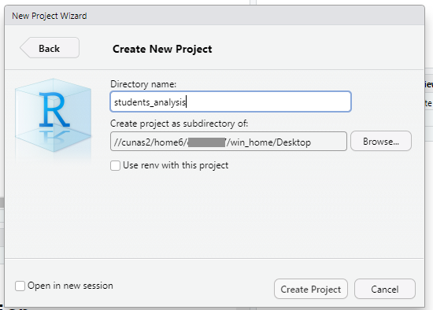

第3回：プロジェクトの整理とデータの読み込み
クイズ
アウトライン
- プロジェクトの整理とデータの読み込み
- ファイルとフォルダー
- データフレーム
- スクリプト
- プロジェクトの作成
RStudioの設定の変更
再現性を担保するために、RStudioの設定を変更する必要があります。
そうしないと、予想外の（自分が書いたコードに依存しない）結果が得られます。
「Tools」→「Global Options」→「Workspace」
- 「Restore .RData into workspace at startup」→ 外す
- 「Save workspace to .RData on exit」→ 「Never」

データフレームについて
- データフレームは最もよく使われるデータ形式です。
- 行と列から構成される2次元データ（表形式データ）
- エクセルのスプレッドシートと同じようなもの
データフレームについて
- エクセルとの大きな違い：各列は同じデータ型を持たなければなりません。
- つまり、各列がベクトルであるということです。
- tidyverseでは、「tibble」と呼ばれます。

初データの読み込み
練習として、教科書に掲載されている
students.csvファイルをRに読み込みます。まず、このリンクから
students.csvをデスクトップにダウンロードしてください：
.csvファイルについて
.csvは、Comma-separated valuesの略です。- データはコンマ（
,）で区切られています。
- データはコンマ（
- エクセルの
.xlsxファイルとの違い.csvの中身は単純な文字列なので、直接中身を確認することができます。.xlsx（または.xls）ファイルはエクセルのみに対応しています。.xlsxはエクセルを持っていない方にとって使いにくいので、.csvを推奨します。
.csvファイルをRに読み込む
- これから使用する関数は
tidyverseパッケージに含まれているので、まずはtidyverseをロードしましょう。
.csvファイルを読み込む関数はread_csv()です。
# A tibble: 6 × 5
`Student ID` `Full Name` favourite.food mealPlan AGE
<dbl> <chr> <chr> <chr> <chr>
1 1 Sunil Huffmann Strawberry yoghurt Lunch only 4
2 2 Barclay Lynn French fries Lunch only 5
3 3 Jayendra Lyne N/A Breakfast and lunch 7
4 4 Leon Rossini Anchovies Lunch only <NA>
5 5 Chidiegwu Dunkel Pizza Breakfast and lunch five
6 6 Güvenç Attila Ice cream Lunch only 6 フォルダ構造について
Z:/Desktop/students.csvはstudents.csvのパス、つまりそのファイルがどこにあるのかを示す情報です。- パスはコンピューター内の住所のようなものです。
- コンピューターのデータはすべてファイルとフォルダーで整理されています。
- ファイル：データ
- フォルダー：ファイルの入れ物
- パスの
/は日本語の「の」と同じような意味です。
.csvファイルをRに読み込む
これでRに
.csvファイルのデータを読み込むことができました。しかし、データの読み込みからデータの解析の最後まで、すべての作業を一度で終わらせることは現実的ではありません。
ここで一旦作業を停止して、RStudioを閉じましょう。
作業の再開
再度RStudioを開きましょう。
今までの成果はどうなっているのでしょうか？
- またすべて一からやり直す必要があります。
もっと良いやり方があるはずです…。
スクリプト
これまではRのコマンドを直接コンソールに入力していました。
- 同じ作業を再度行うときは効率が悪いです。
スクリプト（テキストファイル）にコマンドを保存すると、後々楽になります。
「File」 → 「New File」 → 「RScript」
スクリプトの編集
- スクリプトにこれまで書いたコードを入れましょう：
- コメントを入れることで、自分にこのコードが何をしているのかをメモしておきましょう。
スクリプトの保存
スクリプトを保存しましょう。
「File」 → 「Save As」 → 場所とファイル名を決めて保存します。
今回は
students.Rとしましょう。- Rスクリプトは
.rもしくは.Rのファイル拡張子を使用します。
- Rスクリプトは
スクリプトとコンソールの違い
スクリプトに記述されているRコードは「これから実行するコマンドのリスト」のようなものです（レシピをイメージしてください）。
Rにそのコマンドを実行するように指示する必要があります。
スクリプトからのコマンドの実行
まずはカーソルを実行したい行に置きます（矢印キーかマウスを使ってください）。
「Run」アイコンをクリックします。
- または、ショートカットを使います（おすすめ）。
- Mac:
⌘とEnterを同時に押す - Windows:
CtrlとEnterを同時に押す
- Mac:
チャレンジ ①
RStudioを閉じてから、再度スクリプトを開いてコマンドを実行してください。
一々コマンドを入力するよりは便利でしょう？
プロジェクトについて
スクリプトを書くことでデータ解析の作業をかなり楽にしましたが、次にはファイルを整理する必要があります。
ファイルの整理には、RStudioのプロジェクト機能を使用します。
プロジェクトについて
RStudioのプロジェクトとは、データ解析に使用するフォルダーのことです。
このフォルダー内に、特定のデータ解析プロジェクトに必要なファイルを配置します。
プロジェクトの作り方
「File」 → 「New Project…」 → 「New Directory」 → 「New Project」
今回のプロジェクトは
students_analysisと名付け、デスクトップに配置しましょう。- この教室のコンピューターはデスクトップ以外の場所にプロジェクトを置くと、ログアウト時に消去されます。

プロジェクトの作り方
students_analysisプロジェクトを作成したら、その中にdataというフォルダーを作成し、students.csvをdataに移動してください。- 「Files」パネルでフォルダーアイコンをクリックします。
- 右下のファイルパネルに
dataが含まれていることを確認できます。
プロジェクトの開き方
RStudioを一旦閉じましょう。
今度は、アプリ一覧からではなく、プロジェクトからRStudioを開きましょう。
students_projectフォルダーを開き、その中のstudents_project.Rprojファイルをダブルクリックしてください。
- すると、RStudioはそのプロジェクトに入った状態で起動します。
- ファイルパネル（右下）にこれまでの
dataやstudents.Rが表示されていることを確認してください。
- ファイルパネル（右下）にこれまでの
パスについて
- プロジェクトを開いた後、スクリプトを使ってもう一度
students.csvを読み込みましょう：
Error: 'Z:/Desktop/students.csv' does not exist.今度はうまくいかない。なぜでしょう？
- 先ほど、
students.csvをstudents_projectに移動しました。つまり、もうDesktopには置いていないため、Desktop内を探しても見つかりません。
チャレンジ ②
- このコードをどのように変更すれば
students.csvを読み込むことができるでしょうか？
絶対パス
- 一つの解決方法は絶対パスを指定することです：
- コンピューターの最上位ディレクトリ（教室のパソコンでは
Z:）から始まります。- Macの場合は
/から始まります。
- Macの場合は
- コンピューターの最上位ディレクトリ（教室のパソコンでは
- しかし、もしこのプロジェクトを再度移動した場合、同じような問題が発生します。
相対パス
もう一つの方法は「相対パス」と呼ばれるものです。
つまり、Rの作業ディレクトリ（Rが現在入っているフォルダー）から見たパスです。
getwd()でRの作業ディレクトリを確認できます：- “Get working directory”
現在、Rは
Desktop/students_analysis/に入っていることがわかりました。したがって、以下のようにデータを読み込むことができます：
RStudioのプロジェクト機能を使うと、.Rprojファイルが含まれるフォルダーが作業ディレクトリになります。
ファイルの場所がすぐにわかり、プロジェクトを別の場所に移動してもコードを変更する必要がありません。
相対パスをおすすめします！
チャレンジ ③
penguins_analysisというプロジェクトをデスクトップに作成して開いてください。終わったら、再度students_analysisを開いてください。- （
penguinsは別の教科書のデータセットです）
- （